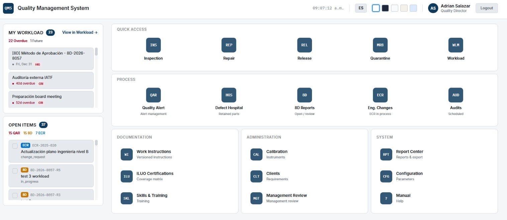
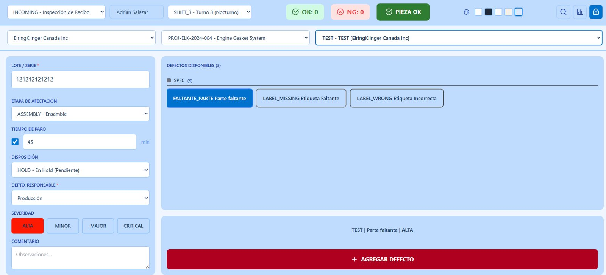
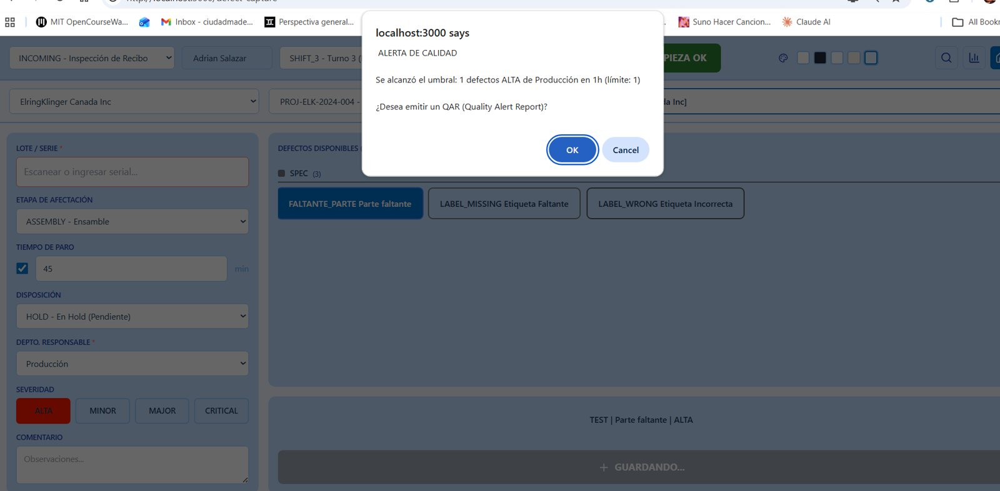
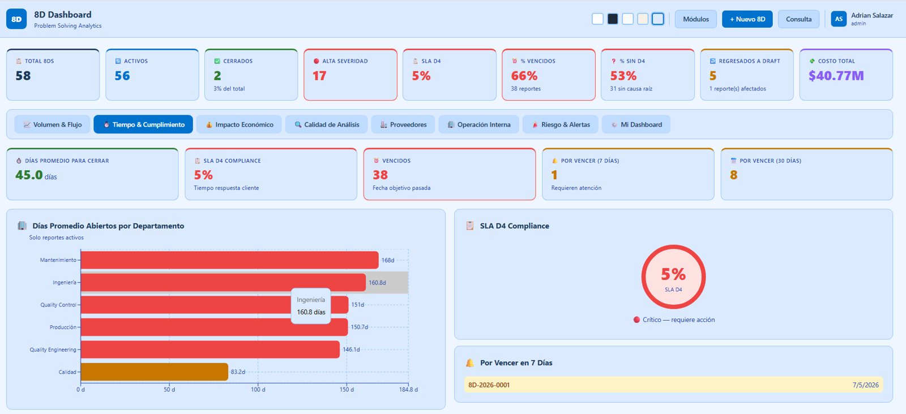
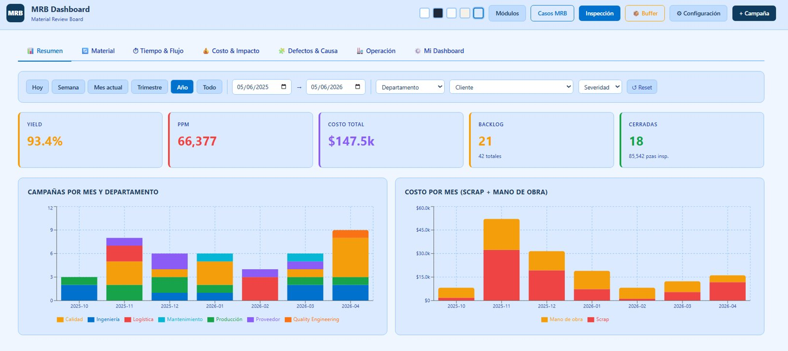
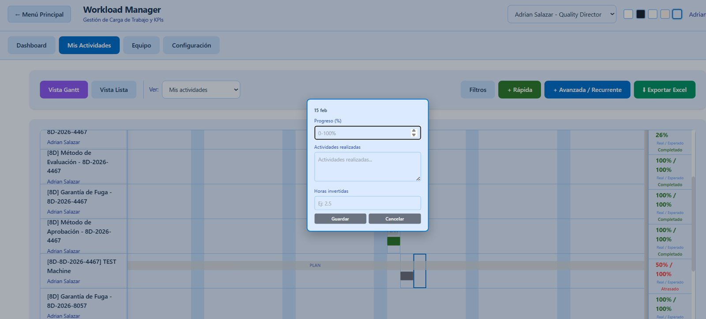
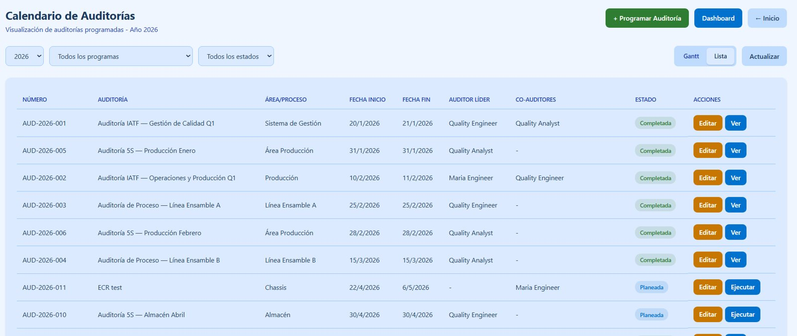

Your entire plant's quality in one platform.
From the defect on the line to the 8D close-out: alerts, approvals, audits and engineering changes, connected and traceable.
The result: repeat defects, audit findings and cost of poor quality that no one can measure.
No double entry: data flows between modules and everything stays traceable, from serial number to signature.
Plus: customers and BOM, lessons learned, spec confirmation, production entries and multi-plant setup.







Every captured defect is checked against configurable thresholds by severity. Once exceeded, a QAR is issued with its SLA clock running.
Illustrative tablet capture screen
Actions, findings and changes land automatically in their owner's inbox.
Assumptions: 20 defects/day · 6 lot traces/year · 4 audits/year · 12 8D reports/year (8 h → 2 h) · 4 h/week of reporting. Junior engineer at {{salaryTxt}} USD/year + 30% benefits and overhead = {{rateTxt}} USD/hour (2,080 h/year). Excludes chargebacks and recurrences.
We know both sides of the table: the criteria the OEM judges by, and the pressure on the supplier inside the plant.
Book a 30-minute demo with your own defects and approval flows.